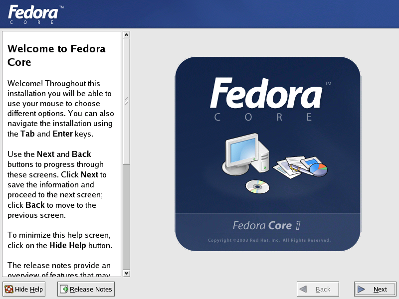
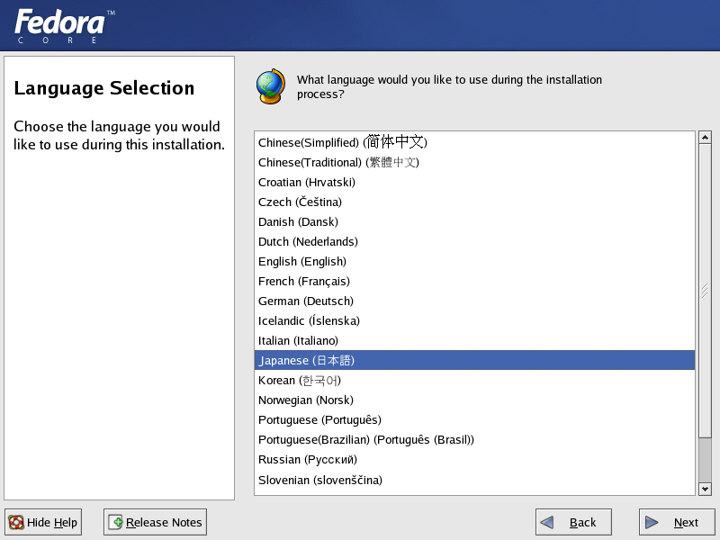
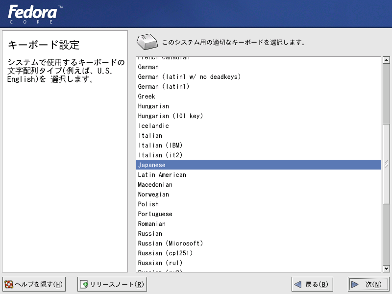
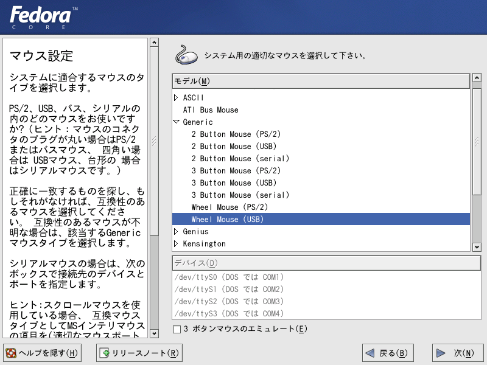

フェドーラ リナックス（Yarrow)のインストール手順について その（１）
Fedora-HowTo Install
標準的なインストール手順をこれから説明します。ユーザーが、家庭でデスクトップ・パソコンにインストールして、インターネットを楽しんだり文書作 成を行える程度の環境を構築する場合です。
フェドーラ・プロジェクトのウェブサイトから、ISOイメージのファイルをお使いのパソコンにダウンロードしてくださ い。ISOイメージは３つのファイルから構成されていて、それ ぞれ620〜630MBの 容量があります。Linux関連の雑誌に付録として添付される かもしれません。ダウンロードが完了したファイルは、必ずMD5SUMに よるチェックを行い、改ざんがないかどうかを点検します。
ファイルのダウンロードが完了すれば、それぞれのファイルをコピーして、CD-Rを
作成します。CD-Rを作成するためのソフトウェアを用意し、そのソフ
トウェアのマニュアルに従がって作業を進めてください。例えば、CDRWINを使って焼く場合には、http://www.moridaira.com/Alesis/HowtoOS.htm
で紹介している手順を参考にして作業を進めます。
出来上がったCD(CD-R)に不良箇所（不具合）が無いかどうか、の 点検をします。フェドーラのCDには、メディアチェック(Media Check)という機能がオプションで用意されており、この使用が推奨されています。その手順を書きます。
まず、パソコンにCDを挿入してしばらくすると、メディアチェックを実行す るかどうかを尋ねる初期画面が表示されます。この画面が表示された時、「←」「→」キーを用いてカーソルを「Test」 に移動させて、Enterキーで選択します。メディアチェックが完了し問 題が無い場合には、画面下部に”It is OK to install from this media.”というメッセージが表示されるので、必ず確認してく ださい。
続けて2枚目以降のCDに ついても、画面上の指示通り、同じ手順でチェックを行います。
メディアチェックが済めば、引き続いてインストールの作業に入ります。メッセージに従がって、1枚 目のCDをパソコンのスロットに挿入し、矢印キー「→」を使っ て「Skip」を選択して、Enterキー を押します。するとCDが読み込まれ、その後の作業手順は対話形式で画面に順 次表示される仕組みになっています。
＊グラフィカルなインストール作業を開始するには、Enterキー を押して続行するだけです。
グラフィカル・インストールを選択した場合、最初に次の画面が表示されます。

＊注意 これから説明する環境設定が完了して、実際にインストール開始の画面が表示されるまでは、いつでも作業を安全に中止することが出来ます。 作業の中止は、キーボードからCtrl+Alt+Delを入力するか、またはパソコンの リセットボタンを押下することで行えます。
１．インストール作業で使用する言語をこの画面から選びます。Japanese（日本語）を選んで、次へ(Next)進 むボタンを押します。

２．これで、設定作業の画面は日本語で表示されるようになっています。ここでは、キーボードの種類を設定します。日本語を扱うのであれば、Japaneseを 選択しておきます。

３．使用するマウスの種類を選びます。下の図のように、現在ウインドウズパソコンで一般的な2ボ タン式のホイールマウス選択することも出来ます。マウスのメーカーが一覧にない場合には、Generic（汎 用）から選びます。

次へ<NEXT>